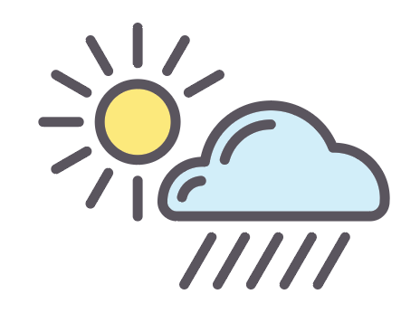

True or False: Vectors are the only type of images that can be scaled up to any size without loss of quality.
Which image types support transparency?
Which is the best file format for the following image?
By default, is the img element a block element or an inline element?
Which is the best file format for the following image?
True or False: The image element requires a separate closing tag.
What are the two attributes that are required for every image element?
Which attribute is used by screen-readers for the visually impaired?
True or False: The src attribute can contain an absolute or a relative url.
Referencing the directory structure shown, write the code that would show the image lizard.jpg. Assume you are in index.html. Make sure you include any required attributes.
Hint: A good description of the image is "Larry the lizard".